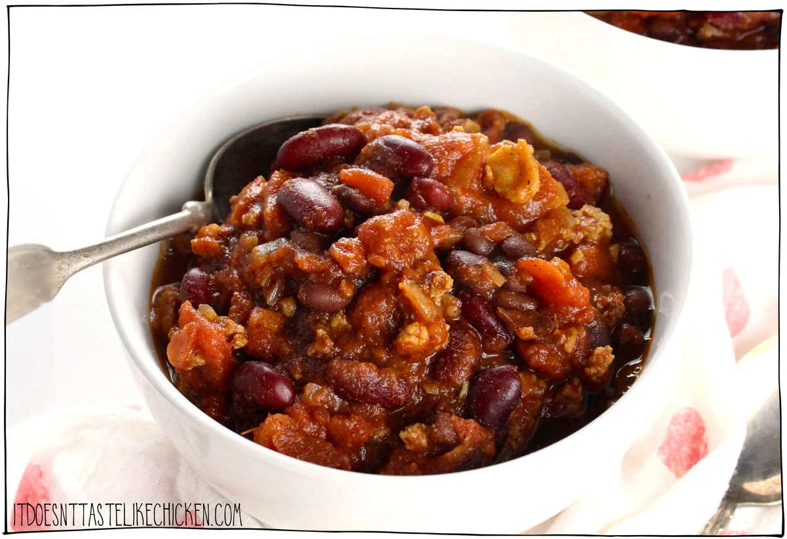

Vegan Chili
Back to home

Description:
This vegan chili recipe is a plant-based twist that tastes better than meat chili!!! You read that right. This vegan chili recipe has won 1st place at a chili cook-off competing against non-vegan recipes! Packed with protein and fibre, this award-winning vegan chili is not only perfect for game day or entertaining but also easy to make, full of good-for-you ingredients, and freezes beautifully for meal prep.
The secret? Tofu crumbles. If you're new to this technique, get ready for a delightful surprise! I developed this technique in 2015, it involves taking extra-firm tofu, crumbling it, seasoning it, and baking it until crispy. Stirring these dried tofu crumbles into your chili adds an amazing chewy, meaty texture by absorbing some of the moisture. Trust me, once you try making tofu crumbles, you'll be hooked!
Ingredients:
For the Chili:
- 1 tbsp olive oil
- 1 yellow onion, chopped
- 4 cloves garlic, minced
- 2 cans (28 fl. oz each) diced tomatoes
- 2 cups cooked black beans
- 2 cups cooked kidney beans
- 1 cup water
- 1/2 tbsp chili powder
- 1 tbsp cumin
- 1 tbsp brown sugar
- 1.1 tsp salt
- 1 tsp smoked paprika
- 1/4 tsp cayenne powder
For the Meaty Tofu Crumbles:
- 2 tbsp nutritional yeast
- 1 tbsp soy sauce
- 1 tbsp olive oil
- 1 block (350 g) extra firm tofu
Steps:
- For the Chili: Add the olive oil to a large pot and heat over medium-high heat. Add the onion and garlic and sauté until the onion is translucent and just begins to brown, about 5 minutes. Add the tomatoes, beans, water, and all of the spices. Bring to a boil and then reduce to simmer and continue to simmer with the lid off for 1 hour, giving it a stir every now and then. If the chili gets too thick, add water as needed to reach your desired consistency.
- For the Tofu Crumbles:Preheat your oven to 350℉ (180℃). Line a large baking sheet with parchment paper or lightly grease it.
- In a large bowl, mix nutritional yeast, soy sauce, and olive oil. Break the tofu into a few large chunks and add them to the bowl, then us a potato masher to mash the tofu into crumbles. Stir the tofu crumbles well making sure all of the tofu is evenly coated in nutritional yeast mix.
- Spread the tofu crumbles evenly over the prepared pan. Bake for 40 - 45 minutes, stopping to stir the tofu every now and then. Keep a close eye on it towards the end so that it doesn't burn. You want the tofu to be nicely browned. The smaller crumbles will be darker than the larger crumbles, and that's good because it will provide a variety of texture to the chili. Remove from the oven and set aside.
- Once the chili has simmer for an hour, stir in the tofu crumbles into the chili and continue to cook for another 5 minutes. This will allow the tofu to absorb the sauce and become chewy. Serve hot with toppings of choice and a side of cornbread if desired. See notes for storage.
Original recipe
Back to home